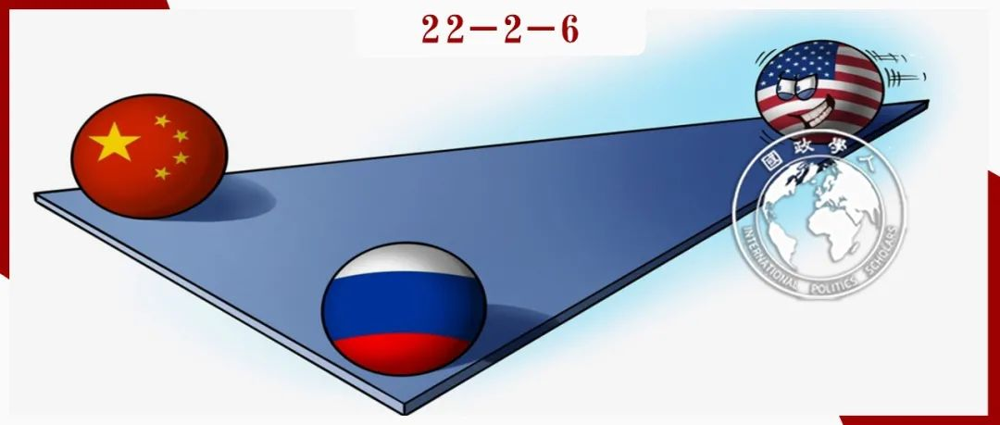

收录于合集 #《国际关系前沿》2022年第2期 8个

作品简介 ****
作者： 蒂莫西·克劳福德（Timothy W. Crawford），波士顿学院副教授，主要研究领域为联盟政治（尤其是楔子战略）、强制外交和国际情报合作。其最新的作品为The Power to Divide: Wedge Strategies in Great Power Politics (Cornell University Press, 2021).
编译： 黎开朗（国政学人编译员，立命馆大学国际关系学院）
来源： Timothy W. Crawford (2021) How to Distance Russia from China, The Washington Quarterly , 44:3, 175-194, DOI: 10.1080/0163660X.2021.1970903
归档： 《国际关系前沿》2022年第2期，总第41期。

导读
本文刊登于2021年华盛顿季刊第三期。本文的研究问题是“美国如何离间中俄?”,作者给出的回答是美国应该利用 “选择性调适” （Selective Accommodation） 楔子战略 对俄罗斯在重要安全利益方面进行让步，从而使其疏远中国。本文的行文层层递进，在提出具体离间中俄的方法之前，作者先是提出了两个重要的问题： 什么是中俄靠近的主要原因和中俄靠近将会带来怎样实质性的威胁。 与认为是意识形态使得中俄靠近的观点不同，作者认为是 美国联盟体系对于中俄两国的包围导致了中俄的靠拢。而中俄的靠近会使得中国在中美竞争中期待俄罗斯的支持，从而会让中国采取更加冒险的举动。 在具体怎样离间中俄的问题上，本文作者克劳福德延续他一贯对“选择性调适”的偏好，认为应该通过在重要的安全利益上让步于俄罗斯从而减缓美俄之间的紧张关系来让俄罗斯疏远中国。虽然让步于俄罗斯这一政策也有一些缺点，但实际上也有抵消因素来抵消这一政策的负面影响。
然而，从目前的乌克兰局势来看，美国采取的楔子战略更像是“强制性楔子战略”（coercive wedging）。与克劳福德认为“选择性调适”比“强制性楔子战略”更有效不同，日本学者泉川泰博（Izumikawa Yasuhiro）认为“强制性楔子战略”同样有效。他认为“强制性楔子战略”比起“选择性调适”更好的地方在于，采用“选择性调适”的离间国（divider）会与敌国（enemy）陷入对目标国（target）的“抬价竞争”(outbidding competition),而“强制性楔子战略”就不会有这样的问题。事实上，楔子战略的成功与否不仅要取决于这一战略本身，还要取决于敌国的约束战略。泉川泰博就用1950年代苏美日三国的外交拉锯战这一例子生动展现了离间国的楔子战略和敌国的约束战略（binding strategy）之间的互动。并且正如克劳福德所言，“选择性调适”的代价本就高昂，需要做出让步。高昂的代价和敌国与盟国对于美国安全承诺的减弱这一误解本身就使得美国难以采用“选择性调适”楔子战略，再加之有同中国陷入“抬价竞争”中的风险。因此，试图拉拢盟友的拜登必然不会选择本文中克劳福德所建议的“选择性调适”。
最后回到中俄是否会走向结盟的这一问题，俄罗斯著名的中国问题专家亚历山大卢金（Alexander Lukin）在同一期的华盛顿季刊上撰文称中俄友好的顶点可能已经过去。卢金认为中俄间的友好关系主要有两点原因。 第一、俄罗斯需要与中国这一强大的邻国在政治和经济方面维持稳定的关系。第二、西方对俄罗斯的施压使得俄罗斯转向中国寻求政治和经济方面的支持。 卢金进一步强调中俄靠近的同时，俄罗斯也认识到与中国之间的战略合作是有限度的。俄罗斯不愿意全方面地支持中国的倡议和立场（比如领土问题），因为这会复杂化俄罗斯和其他伙伴国之间的关系。而相同政治、经济和文化因素在促进中俄靠拢的同时，也限制了两国到底能够靠得有多近。具体而言， 中俄两国反对美国主导地位的原因是中俄两国在历史上都是强大和独立的大国这一情感之上，而这也会使得在中俄会避免过多的依靠包括彼此在内的其他大国。 因此，尽管中俄在靠拢，但是这一靠拢是有限度的，并不会发展成为正式的同盟关系。
摘要
中俄之间的军事关系正在日益紧密。尽管有一些学者认为美国对此无能为力，但仍有一些学者认为美国应该采取楔子战略（一种把潜在的敌国分离或阻止其加入一个敌对同盟的政策）来改善与俄罗斯的关系并使其远离中国。然而，当涉及到如何实施时，讨论便受限于外交政策正统的惯例和对两个基本问题的错误回答。 第一、什么是中俄靠近的原因？第二、中俄靠近将会带来怎样的实质性威胁？
**
**
本文作者认为中俄靠近的主要原因是美国正式军事联盟（北约）和非正式的战略伙伴关系（印度、格鲁吉亚和乌克兰）的合并体系对中俄的逐渐包围。 对于美国的大战略而言，中俄靠拢带来的主要问题不是中俄将更好地联合军事力量，而是中国对莫斯科支持的期望增加将促使其在亚洲冒更大的风险。 离间中俄的楔子战略的政治重点应该是削弱这些期望。这将需要采取代价高昂的措施来减轻美国军事联盟对俄罗斯的压力，同时增加向中国施加的压力。在认识到该方法缺点的同时，还必须考虑到它有可能进一步遏制和威慑中国。
编译
01
什么是中俄靠近的主要原因？
作者认为过去五年已经证明了中俄走向军事同盟的最重要原因是美国同盟体系在中俄（尤其是俄罗斯）边境的扩大。 在冷战后，早在中俄开始真正走向联盟之前，美国的军事关系网络就已经大幅扩大，并且在美国为欧亚大陆培养新盟友和战略伙伴的努力中继续向前推进。最终，一个联盟的扩张引发的恐惧促使了另一个联盟的扩张。而得益于特朗普总统与中俄竞争的独特方式，现如今我们有可能对此有更加确切的理解。具体而言，特朗普上台后减少了意识形态和制度上的竞争，大幅削弱了许多被认为是促使中俄靠近的条件。
然而在军事结盟方面，情况就大不相同，特朗普政府持续采用军事手段对抗中俄的激进主义。尽管特朗普在言语上抨击北约“搭便车”的行为，但还是极大支持了盟友（尤其是东侧）。具体而言，特朗普政府把2014年的《欧洲再保证倡议》（European Reassurance Initiative）改为了《欧洲威慑倡议》（European Deterrence Initiative）以强调其反俄重点，并增加了该倡议的国防预算。美国还迫使北约盟国提高国防开支，并批准黑山和北马其顿加入北约。此外，美国还增加了在波兰、波罗的海国家和罗马尼亚的美军轮岗，并规划在这些国家长期基地安排以及黑海地区的海军活动。在对乌克兰和格鲁吉亚的安全援助方面，美国也采取了更具对抗性的方式。而在亚洲，美国则通过“四方安全对话”（Quad），重新努力巩固与日本、澳大利亚和印度的反华战线。美国在2019年还推出了“印太战略”，欲通过建立自己的武装力量并投资旧盟友和新战略伙伴来制衡中国日益增长的实力和影响力，从而恢复美国在该地区的主导地位。特朗普政府与印度达成了深化战略伙伴关系的新协议、向越南示好、增加对台军售，并鼓励日本大幅增加国防开支。为了完成这一构想，特朗普政府与盟国政府一起寻求促进北约和印太同盟网络之间更紧密的战略联系。
所有这些举动最终导致针对中俄的军事联盟迅速扩大，具体包括中俄之间军事技术转让、合作与规划以及联合军演在模式和质量上的逐步变化。 当其他被认为推动中俄靠拢的意识形态和制度因素被最大程度减弱时，两国的军事伙伴关系却反而取得了显著进展。而美国加强和扩大针对这两个国家军事同盟的努力并没有减少，反而有所加强。 但是许多人甚至完全忽视了这一原因。即使人们认识到美国的军事政策刺激了中俄靠拢，也很容易将这一机制的影响最小化或模糊化。因而有的人会声称意识形态和对美国领导的自由秩序的修正主义敌意使得中俄的结盟理所当然且不可避免，这意味着中俄的结盟轨迹不会因美国的任何约束而有所改变。美国的联盟体系是对抗中俄联合能力的强大“杠杆”，这一新的原则也掩盖了主要原因的深层含义，即同盟体系的缓慢扩张可能会适得其反，它将削弱可以威慑俄罗斯的北约内部团结，并加强中俄同盟从而使得美国更难威慑中国。
02
美国能从削弱中俄靠近得到什么？
美国是否值得向俄罗斯做出让步，使其与中国保持距离，取决于美国的首要战略重点是否会因俄罗斯与中国有（或没有）紧密结盟而变化。对于这个问题，作者认为可以转换思路去问，一个与俄罗斯更加紧密的结盟将会怎样影响中国的军事实力和政治计算。 作者认为虽然与俄罗斯的合作能够在重要方面帮助中国增强军事实力，但比起军事上的帮助，俄罗斯与中国结盟增加了中国走向冒险主义的可能性。 这不仅是美俄在东欧的政治危机或军事对立会让中国“利用美国的优先关注”（exploit US preoccupation）对亚洲的冲突点施加压力，而且即使是在欧洲没有危机的时候，因为俄罗斯卷入中美冲突的可能性增加，中俄更紧密的伙伴关系还可能会给中国“壮胆”，从而大大增加了美国回应的风险和复杂性并扩大了中国在行动上的自由度。 而如果对得到俄罗斯的直接支持的期望会让中国愿意冒与美国发生冲突的更大风险的话，那么降低或复杂化这种期望，同样也会让美国更容易威慑中国。 有的学者认为因为俄罗斯不会加入一个对抗中国的联盟（或即便加入也不会全力去制衡中国），所以削弱俄罗斯与中国的关系不会有巨大的回报。然而，作者指出这种观点错误地认为楔子战略一定要使对方转变立场，并且忽视了鲜有剧烈变化的俄罗斯结盟对美国的战略价值。而且离间中俄还可能会让中国避免一场战争。此外，试图削弱而不是扭转俄罗斯的结盟还有另外两个好处:难度和成本都将更低。
03
“选择性调适”：离间中俄
作者认为离间中俄应该遵从“选择性调适”逻辑的楔子战略。换言之，就是通过做出满足第三国要求的政策调整，从而减少敌方盟友的数量。作者在此强调正确地采用“选择性调适”，需要分清主次。如果中国是美国的首要敌人，那么美国应该全力对抗中国而不是俄罗斯。接着作者具体阐释了“选择性调适”应该体现的五个原则。
第一、让步的目标不应该是让俄罗斯成为一个对抗中国的盟友，而是阻止其加深与中国的战略关系并削弱这种关系。
第二、应该关注中俄靠近的主要原因，即美国在西侧对抗俄罗斯的军事同盟的缓慢增长。
第三、政策的调整应该给予俄罗斯一些直接或近期的切实安全利益，而不仅仅是象征性的、模糊的或遥远的收益。
第四、扩大这些切实安全利益的行动应该是可信的。即不能受制于其他国家的否决，也不能以欧洲漫长而不确定的多边政治谈判结果为依据。
第五、该政策应该与美国最重要的“核心”盟友（英法德）的偏好相一致。因此，该政策应该保留美国现有的北约正式联盟承诺，并提高美国与其主要盟友之间的凝聚力。
（一）终结北约正式的扩张
离间中俄要从宣布北约停止扩张开始。美国作为扩张的首要幕后黑手，可以通过单方面宣布其反对新的成员国加入北约以停止扩张。虽然这样的声明将会引发争议，但这将使得美国更难回到支持北约扩张的立场，同时也可以巩固现有的北约核心盟友（法德）对向俄罗斯周边进一步扩张的抵制。这一声明将会在两方面有利于俄罗斯的安全。 第一是涉及芬兰和瑞典，对于俄罗斯而言，这两国正式加入北约将是重大的挑衅。 而美国发出的反对进一步加入北约的信号在这一点上对俄罗斯来说是一个有价值的保证。 第二涉及到了格鲁吉亚和乌克兰，这也是更重要的。 俄罗斯在2008年和2014年不惜动用武力使局势复杂化从而阻止其加入北约。因此，反对北约扩张的政策既能迎合俄罗斯至关重要的利益，也能够通过把美国的政策与北约核心盟友保持一致来提升北约内部的凝聚力（十多年来德法一直反对格鲁吉亚和乌克兰加入北约）。但实际上，由于北约内部并没有就格鲁吉亚和乌克兰的加入达成共识，这样的声明并不像看上去的那样是一种让步。
（二）解开与格鲁吉亚和乌克兰间的军事纽带
然而，美国与格鲁吉亚和乌克兰军事结盟的实质远不止是官方支持它们加入北约这样的口头支持。由于美国一直致力于把它们培养成事实上的军事盟友和北约的辅助国，为此一直在军事上给予这两国大力支持。因此，如果美国真正地想要与俄罗斯改善关系，不止是改变支持格鲁吉亚和乌克兰加入北约的立场，还应该具体地减少与这些国家的军事联系，这将极大地减轻推动俄罗斯向中国靠拢的压力。毫无疑问，这些对俄罗斯安全利益的让步将是代价高昂的，但如果要对俄罗斯的结盟产生影响的话就需要这么做。相比较其他具有类似效果的手段，华盛顿与格鲁吉亚和乌克兰在政治脱钩方面有更大的灵活性，而且这样做不会违背其正式北约集体防御的承诺，并且这一灵活性同时也因北约核心盟友的支持而被进一步提高。美国可以通过断绝与格鲁吉亚和乌克兰的军事联系并根据《欧洲威慑倡议》继续努力来放大这种优势，从而加强北约主要的集体防御任务。
（三）其他以军事克制来离间的机会
作者给出了三个美国发出军事克制的信号来安抚俄罗斯的方式。
第一、美国可以重申将避免在东欧盟友的领土上长期部署大量作战部队，而这与1997年的“北约-俄罗斯基础文件”（NATO-Russia founding act）相一致。 这一重申不会对目前美国和北约在这些盟国领土上进行军演和保持多部队轮换相抵触，并且将在美国国内普遍支持美军驻扎东欧的背景之下传达一个重要的克制信息。此外，由于北约核心盟国本身就反对违反1997年基础文件的条款，这也将再次增强北约的凝聚力。
第二、华盛顿可以宣布将继续打算将其在罗马尼亚和波兰的宙斯盾弹道导弹防御系统的任务限制在针对伊朗导弹威胁的范围内 。 对俄罗斯而言，此举比较重要的影响是不会削弱其核威慑能力，而由于该系统转变用途的可能性较小，将不会转变为针对俄罗斯的进攻性武器，所以相对来讲不那么重要。尽管这种保证不太可能消除俄罗斯的怀疑，但因为改变用途的决定将需要北约内部广泛的共识并几乎肯定会引发内部反对，所以这样的保证也将有利于维护北约内部的凝聚力。
第三、美国可以重申其将遵守承诺（北约-俄罗斯基础文件）不会在北约的东部盟国存储或部署核武器。 即便美国认为由于战略环境的改变，北约- 俄罗斯基础文件已经不再适用，但在进一步通知之前继续保持这一做法将使俄罗斯得到一些让步，并有望达成更广泛的协议以限制在欧洲部署核武器。除此之外，美国还应该与俄罗斯就一项以防止或限制在东欧和俄罗斯西部部署中程核导弹的新条约进行谈判。除了避免与俄罗斯进行军备竞赛这一直接目的以外，让莫斯科进入一个新的双边谈判渠道也有助于离间中俄。
04
战略与优先事项
诚然，做出让步可能会出现例如中俄会把让步视为美国决心的动摇，导致结果适得其反等缺点。但是不能单独地评估这些成本，在计算接受或是拒绝时应该考虑两种相互抵消的因素。 第一、俄罗斯可能会将这些让步误解为美国弱化了对北约核心集体防御的承诺，这种风险将被美国政策与欧洲核心盟友保持一致而提高的北约凝聚力所抵消。第二、中国更大胆的行为将被缓和欧洲紧张局势以离间中俄和集中力量加强印太战略以遏制中国的明显目的所抵消。
战略的首要优先事项将是制衡中国以及与此目的相关的潜在战略收益，阻止中俄结盟或中俄关系的加深将减少中国在中美对抗中对俄罗斯支持的期待。而减少与俄罗斯在欧洲的对抗同时也可以使美国与最有实力的欧洲盟友更好地关注亚洲的制衡。由于俄印保持着传统上牢固的防务关系，而美俄冲突将会限制美印之间的合作。所以缓和美俄冲突也可以拉拢印度来一起威慑中国。
最后需要强调的是这些让步应该在亚洲发生重大危机或中俄逐渐加强结盟之前进行。 虽然这样的危机将会使美国在政治上更容易理解这种政策，但让步的潜在影响力和效用将大大减弱。比起从实力的立场上刻意为之，让步于俄罗斯来应对一场亚洲的危机会更加损害美国的信誉。中俄结盟越紧密，上述措施对俄罗斯的影响就越小。在“选择性调适”之下，分裂一个紧密联盟比阻止一个联盟的形成更加困难。
词汇整理
北约-俄罗斯基础文件 NATO-Russia founding act
选择性调适 Selective Accommodation
欧洲再保证协议 European Reassurance Initiative
欧洲威慑协议 **** European Deterrence Initiative, EDI
审校 | 杨影淇 朱文菡
排版 | 顾金源 黄伊蕾
文章观点不代表本平台观点，本平台评译分享的文章均出于专业学习之用, 不以任何盈利为目的，内容主要呈现对原文的介绍，原文内容请通过各高校购买的数据库自行下载。

国政学人
支持学术公益与知识传播
微信扫一扫赞赏作者 __赞赏
已喜欢，对作者说句悄悄话
取消 __
发送给作者
发送
最多40字，当前共字
上一页 1/3 下一页
长按二维码向我转账
支持学术公益与知识传播
受苹果公司新规定影响，微信 iOS 版的赞赏功能被关闭，可通过二维码转账支持公众号。